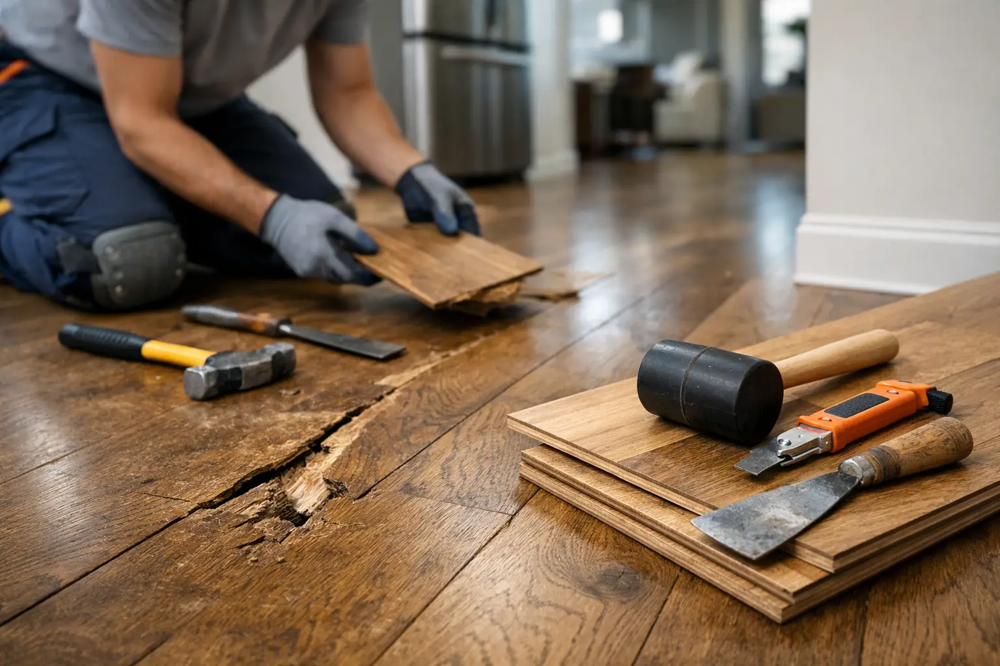

Floor Repair Calgary for Damage That Won’t Wait
By Vitalii Nestorenko · August 11, 2026 · 6 min read
A floor rarely fails all at once. It starts with one tile that clicks underfoot, a laminate seam lifting near the dishwasher, or a hardwood board that suddenly feels soft. Left alone, that small spot can become a trip hazard, allow moisture below the surface, and make a room look neglected. Professional floor repair Calgary homeowners can book quickly is often the practical answer - especially when the damage is contained and the rest of the floor still has years of life left.
When a Floor Needs Repair Now
Cosmetic wear can usually wait. Movement, moisture, and safety concerns should not. If a board bends when stepped on, a tile is loose, flooring is separating near an exterior door, or water has reached the subfloor, book an assessment before the affected area grows.
Calgary homes also see plenty of seasonal movement. Dry winter air can open small gaps in hardwood or cause trim to pull away slightly, while wet boots, snowmelt, and spills can damage floors near entryways, kitchens, bathrooms, and laundry rooms. Not every gap means the floor is failing, but a change that is sudden, spreading, or soft underfoot deserves attention.
Watch for these warning signs:
- Flooring that feels soft, bouncy, or uneven in one area
- Cracked, loose, rocking, or missing tiles
- Laminate or vinyl edges that are curling, lifting, or separating
- Dark staining, swelling, cupping, or a musty smell after a leak
- Squeaks that are new, persistent, or paired with visible movement
The goal is not to replace more floor than necessary. It is to find the source of the damage, secure the affected area properly, and prevent the same issue from returning.
Common Floor Repair Calgary Homes Need
Hardwood and engineered wood repairs
Hardwood can show scratches, dents, gaps, worn finish, water marks, and loose boards. A light surface scratch may only need touch-up work, while deeper gouges may require board replacement or refinishing in the affected section. If boards are cupping or buckling, the first question is where the moisture came from. Repairing the visible boards without addressing a leak, humidity issue, or moisture below the floor can lead to repeat damage.
Engineered wood needs a careful approach because its top veneer is thinner than solid hardwood. Some products can be refinished lightly, while others are better repaired by replacing damaged planks. Matching colour and grain is not always perfect, particularly on older floors, but a well-planned repair can make the difference far less noticeable.
Laminate floor repairs
Laminate is durable for busy households, but water is its weak point. If moisture reaches the core, plank edges can swell and seams may lift. A small, dry chip or scratch can sometimes be repaired cosmetically. Swollen planks usually need replacement.
Because laminate locks together, replacing a damaged plank in the middle of a room may involve carefully removing baseboards and working back from the nearest wall. It takes patience and the right technique. Forcing planks apart can damage the locking edges and turn one repair into several.
Vinyl plank and sheet vinyl repairs
Luxury vinyl plank is popular because it handles everyday traffic well and is easier to maintain than many other finishes. Still, heavy furniture, sharp impacts, poor adhesive, subfloor movement, and moisture can cause dents, gaps, lifting corners, or loose planks.
A repair may involve re-securing an edge, replacing individual planks, repairing the subfloor below, or applying the correct adhesive where the product calls for it. Sheet vinyl can tear or bubble, particularly around appliances and high-use areas. Whether it can be patched cleanly depends on the pattern, the location of the tear, and whether matching material is available.
Tile and grout repairs
A cracked tile is not always just a tile problem. It can crack because something struck it, but it can also indicate movement below the tile. Loose tiles, hollow sounds, broken grout lines, and repeated cracks in the same area may point to inadequate bonding or subfloor movement.
Replacing one or several tiles is often possible when matching tile is available. If it is not, a repair can still be handled strategically by using a matching accent tile in a less noticeable layout, or by taking a spare tile from a hidden location when appropriate. Grout and caulking around tubs, showers, and backsplashes should also be maintained, since failed joints can let water travel where it does not belong.
Repair or Replace? The Honest Answer Depends
Many homeowners assume a damaged floor means a full replacement. Sometimes it does, but often a targeted repair is the better value. The deciding factors are the size of the damaged area, the condition of the subfloor, the age of the flooring, the availability of matching material, and the cause of the problem.
Repair makes sense when damage is isolated, the surrounding flooring is stable, and the source has been corrected. A few damaged vinyl planks near a patio door, one loose threshold, or several cracked tiles can often be repaired without disrupting the whole room.
Replacement becomes more sensible when moisture has spread below a large section of flooring, the product is discontinued and no acceptable match exists, or the floor has recurring issues across multiple areas. It may also be the better choice if the existing floor is near the end of its useful life and repair costs are beginning to add up.
A good repair professional should explain the trade-off clearly. The lowest immediate cost is not always the best long-term option, but neither is replacing an entire floor when a sound repair will do the job.
What a Proper Floor Repair Should Include
The visible damage is only part of the work. A reliable repair starts by checking the floor’s stability, nearby transitions, baseboards, and the likely source of moisture or movement. In some cases, the fix is as simple as resetting a loose piece and securing it correctly. In others, damaged material needs to be removed, the subfloor levelled or repaired, and replacement material installed with the correct expansion spacing.
Preparation matters. Floors need a clean, dry, stable base. Rushing this step can cause new planks to separate, tiles to crack again, or adhesive to fail. Careful work also protects nearby walls, cabinets, trim, and appliances from unnecessary damage during removal and installation.
After the repair, the area should be cleaned, transitions should sit safely, and doors should still open and close properly. Small finishing details make the repair look intentional rather than patched together.
How to Prevent More Damage After the Fix
Most floors last longer with simple habits. Wipe up water quickly, especially around sinks, dishwashers, fridges, tubs, and entry doors. Use mats at exterior entrances, but make sure they do not trap moisture underneath. Add felt pads to furniture legs and lift heavy furniture instead of dragging it.
For hardwood and engineered wood, keep indoor humidity reasonably consistent through Calgary’s dry winter months. For laminate and vinyl, avoid soaking the floor during cleaning and use products recommended for the flooring type. If you see a small gap, loose edge, or cracked grout line, deal with it early. Waiting for a convenient time often means the repair becomes larger and more expensive.
Landlords can save considerable frustration by inspecting flooring between tenancies. Small damage is easier to document, easier to repair, and less disruptive before a new tenant moves in.
Get Help Before a Small Floor Issue Spreads
Floor repairs are not all major renovation projects. Many are the kind of practical, contained jobs that restore safety and appearance in a single visit or a short scheduled repair. Nestor’s Home Help provides hands-on flooring repair support for homeowners, renters, and landlords who want a clean, dependable fix without coordinating multiple contractors.
If your floor is lifting, cracking, softening, or coming apart, take a clear photo and avoid putting extra weight on the affected area. Addressing it while the damage is still local can protect the rest of the room and help your home stay comfortable, safe, and ready for everyday life.
Vitalii Nestorenko is the owner of Nestor's Home Help, a licensed and insured handyman business in Calgary. He holds a Master's degree in mechanical engineering and does every job himself.